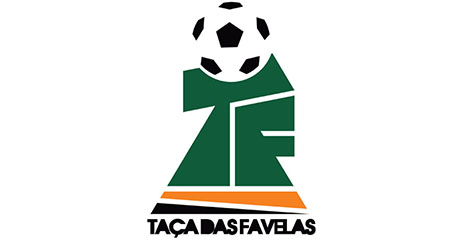
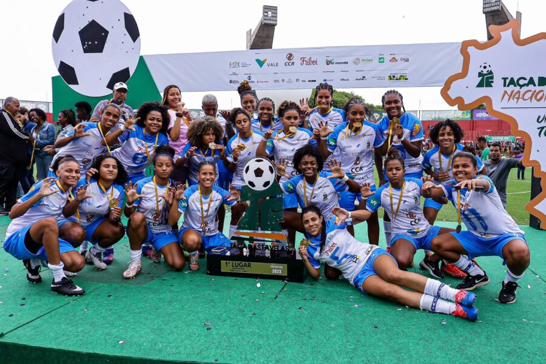
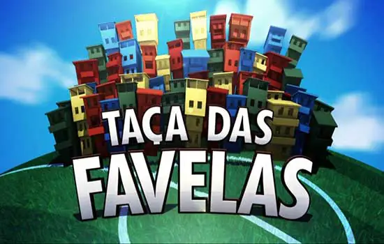
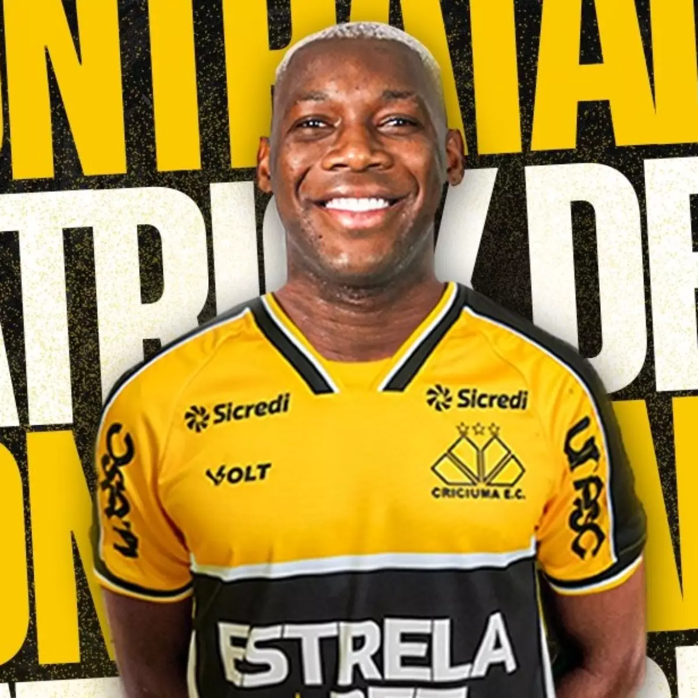

Campeonato Taça das Favelas
A Taça das Favelas é o maior campeonato de futebol entre favelas do mundo. O torneio realizado pela Central Única das Favelas (CUFA) e produzido pela InFavela, empresa da Favela Holding, foi disputado pela primeira vez em 2012, no Rio de Janeiro, completando 10 anos, em 2022. Ainda em 2022, foi realizado mais um grande sonho da CUFA que foi o acontecimento da primeira edição da Taça das Favelas Nacional, o Favelão 2022, que teve as suas grandes finais em novembro, na Arena Barueri, com transmissão ao vivo em TV aberta.
As grandes finais de 2019 foram no dia 27 de julho, com mais de 10 mil pessoas em Moça Bonita, Estádio do Bangu Atlético Clube, com transmissão ao vivo da Globo e do Sportv. O Curral das Éguas se sagrou campeão da categoria feminina, enquanto o Gogó da Ema ficou com o título da masculina. As maiores campeãs no estado são a favela de Padre Miguel AP, no masculino, que levou o título em 2015 e 2016, Corte Oito e Cidade de Deus, no feminino, cada uma com duas conquistas também. São Paulo teve a sua primeira edição, em 2019. E já no primeiro ano contou com o envolvimento de milhares de favelas, colocando mais de 40 mil pessoas no Pacaembu, nas grandes finais vencidas pelo Complexo da Casa Verde, no feminino, e pelo Parque Santo Antônio, com transmissão ao vivo do Sportv e da Globo.
Como a Taça não é só futebol e sim um fator de integração social, a organização do campeonato oferece, antes do início dos jogos, em todos os estados que recebem o projeto, workshops sociais para jogadores e técnicos, que vão desde cuidado com a alimentação até educação financeira.
O volante Patrick de Paula jogou a Taça das Favelas Rio pelo Complexo Santa Margarida, foi revelado, se profissionalizou no Palmeiras, onde fez o gol do título do Paulista de 2020, na disputa de pênaltis, contra o Corinthians. Ele jogou a edição carioca do maior campeonato de futebol entre favelas do mundo nos anos de 2015, 2016 e 2017.
